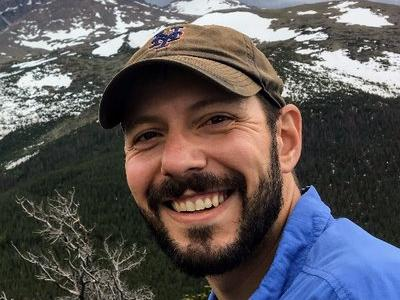
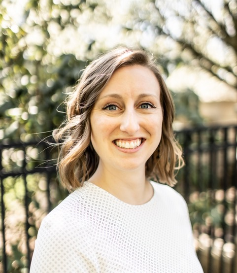
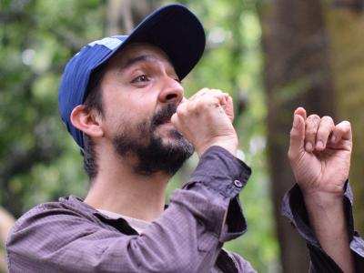

Dr. Rebecca Dikow |
Genomics
Phylogenetics
Digital Humanities
Rebecca Dikow is a Research Data Scientist and leads the Smithsonian Data Science Lab. She leads projects in genomics, informatics, and machine learning.

Rebecca Dikow is a Research Data Scientist and leads the Smithsonian Data Science Lab. She leads projects in genomics, informatics, and machine learning.

Mike Trizna is a Data Scientist with expertise in bioinformatics and machine learning. Mike leads the Smithsonian Carpentries.
Alex White is a Biodiversity Research Data Scientist with expertise in biogeography, quantitative ecology, and community phylogenetics. He is an Associate Editor for Ornithology.

Richie Hodel is developing methods to extract phenotypic trait data from digitzed botanical specimens to better understand the factors underlying patterns of diversity.

William Mattingly is a historian developing methods to better understand complex historical themes in vast digital datasets of historical documents and images.

Jennifer Spillane is using machine learning to investigate deep evolutionary connections between branches of the Tree of Life.
Samiya Ali is a UCSB-Smithsonian Scholars summer intern. Samiya is an undergraduate Data Science major at University of California-Santa Barbara.
Matt Bollinger is a Data Science Lab Graduate intern. Matt is working to build machine learning tools to enhance web Accessibility in digitized museum collections. He is a graduate student in Computer Science at Georgia Tech.
Amalie McHie is an American Women’s History Initiative Becuase of Her Story summer intern. Amali in an undergraduate Software Engineering major at Kennesaw State.
Richard Montes Lemus is a UCSB-Smithsonian Scholars summer intern. Richard is an undergraduate Environmental Science major at University of California-Santa Barbara.
Natalie Nyborg is a Data Scinece Lab summer intern. Natalie in an undergraduate Bioinformatics major at Brigham Young University.
Zachary Wilson is a UCSB-Smithsonian Scholars summer intern. Zachary is an undergraduate Computer Science major at Hancock College.

Carlos Arias is a Staff Scientist at the Smithsonian Tropical Research Institute in Panama. He develops genomic tools to investigate evolutionary questions about the unique fauna of the isthmus of Panama.
Paul Frandsen was a co-founder of the Data Science Lab and is an Assistant Professor of Plant and Wildlife Sciences at Brigham Young University.
Dr. Tsuchiya was the Smithsonian Data Science Lab Postdoctoral Fellow and is now an ORISE fellow at the FDA Center for Applied Food Safety.
Jenna Ekwealor is a Assistant Professor of Plant Biology at San Francisco State University. She was previously a Biodiversity Genomics Postdoctoral Fellow in the Data Science Lab. She studies adaptations for water and heat stress in desert mosses.